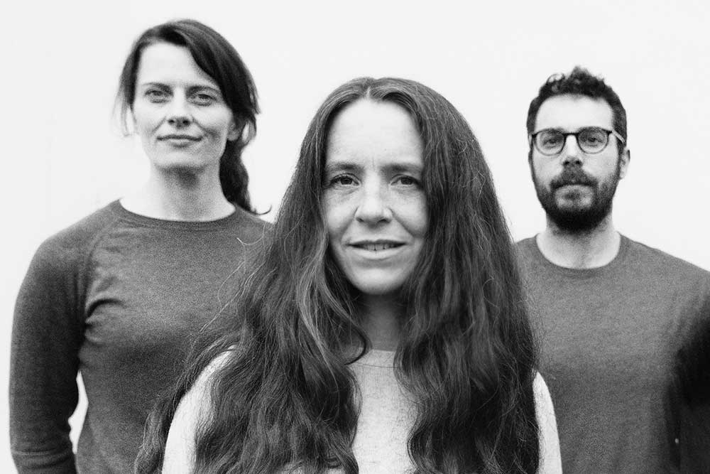
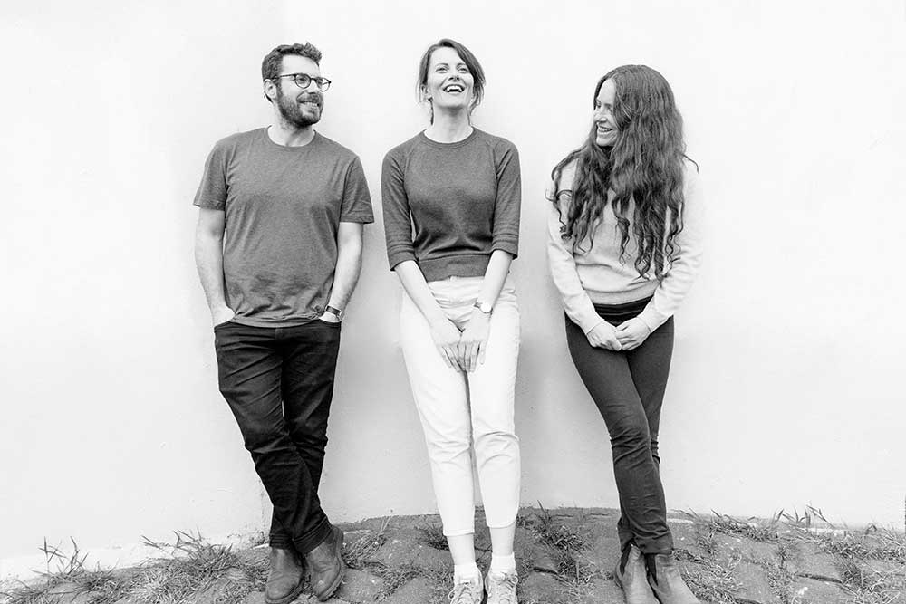

Described as ‘venturers in the post-genre slip stream, weaving folk, improv, art pop and contemporary classical into new material that is soft on the ear but tough as leather.’ (Cormac Larkin, Irish Times)
Clang Sayne was set up in 2008 by
Laura Hyland
(voice, guitar, songwriting) to channel myriad musical influences into
her ‘songscapes’, blending song and sound improvisation.
Emerging from collaborations with different London improvisors
in the '00s, the band has featured various players down the years.
Stalwarts since 2012 are
Carolyn Goodwin
(clarinets, voice),
Matthew Jacobson
(drums, voice), and (most of the time)
Judith Ring
(voice, cello).
Releases include
Sounding Seams III
EP (2024; independent), composed and performed on a set of giant DIY
chimes (further info
here),
The Round Soul of the World
LP (2017; independent), and the debut LP,
Winterlands
(2009
Forwind Music). All albums were recorded live. You can buy or listen to them
here on the Clang Sayne website
or on
Bandcamp.
Former players who have featured on CS recordings include James
O Sullivan (electric guitar), Peter Marsh (double bass), Matthew Robin
Fisher (drums), Paul May (drums), and Caimin Gilmore (double bass).